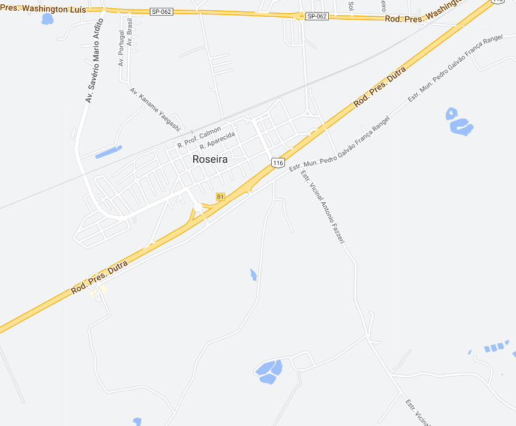
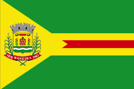

Roseira - Geodex


Município de Roseira
-
Populacão: 10.888 pessoas
-
Área: 129,847km²
-
Fundação: 18 de fevereiro de 1959
-
Distância da Capital: 161km
A cidade de Roseira, localizada no estado de São Paulo, tem sua história ligada à colonização portuguesa e à expansão da cultura cafeeira na região do Vale do Paraíba. No século XIX, a região era conhecida como "Fazenda das Palmeiras", destacando-se pela produção de café. Com o declínio da cultura cafeeira, a cidade passou a se dedicar à agropecuária e à produção de leite. A emancipação político-administrativa de Roseira ocorreu em 1º de janeiro de 1993, tornando-se um município independente. Desde então, a cidade busca promover o desenvolvimento socioeconômico, valorizando suas raízes históricas e investindo em setores como o turismo rural e a agricultura familiar.